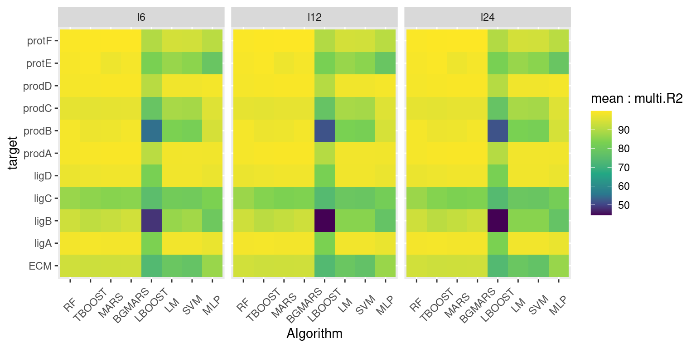
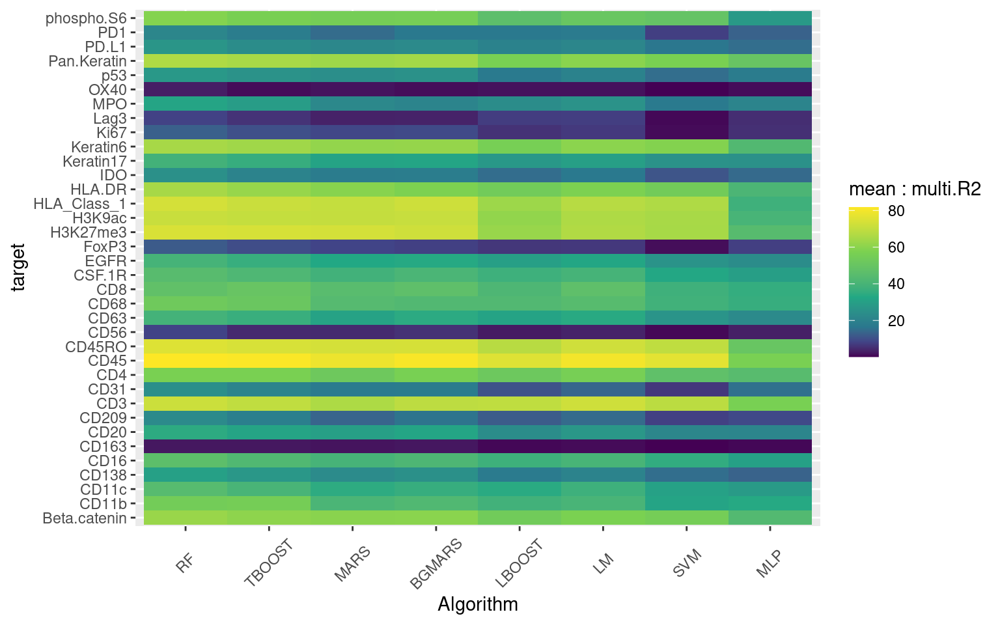

Benchmark
Last updated: 2021-12-15
Checks: 6 1
Knit directory: report/
This reproducible R Markdown analysis was created with workflowr (version 1.6.2). The Checks tab describes the reproducibility checks that were applied when the results were created. The Past versions tab lists the development history.
Great! Since the R Markdown file has been committed to the Git repository, you know the exact version of the code that produced these results.
Great job! The global environment was empty. Objects defined in the global environment can affect the analysis in your R Markdown file in unknown ways. For reproduciblity it’s best to always run the code in an empty environment.
The command set.seed(20211125) was run prior to running the code in the R Markdown file. Setting a seed ensures that any results that rely on randomness, e.g. subsampling or permutations, are reproducible.
Great job! Recording the operating system, R version, and package versions is critical for reproducibility.
Nice! There were no cached chunks for this analysis, so you can be confident that you successfully produced the results during this run.
Using absolute paths to the files within your workflowr project makes it difficult for you and others to run your code on a different machine. Change the absolute path(s) below to the suggested relative path(s) to make your code more reproducible.
| absolute | relative |
|---|---|
| ~/Saez/report | . |
Great! You are using Git for version control. Tracking code development and connecting the code version to the results is critical for reproducibility.
The results in this page were generated with repository version f032329. See the Past versions tab to see a history of the changes made to the R Markdown and HTML files.
Note that you need to be careful to ensure that all relevant files for the analysis have been committed to Git prior to generating the results (you can use wflow_publish or wflow_git_commit). workflowr only checks the R Markdown file, but you know if there are other scripts or data files that it depends on. Below is the status of the Git repository when the results were generated:
Ignored files:
Ignored: data/2021-12-06-15-42_all_results.RDS
Ignored: data/2021-12-08-14-10_all_results.RDS
Ignored: data/2021-12-09-09-21_all_results.RDS
Ignored: data/2021-12-09-17-26_all_results.RDS
Ignored: data/2021-12-13-18-43_all_results.RDS
Ignored: data/2021-12-14-10-57_all_views.RDS
Ignored: data/2021-12-14-17-59_all_views.RDS
Ignored: data/2021-12-14-23-01_all_results.RDS
Ignored: results/
Untracked files:
Untracked: LICENSE.md
Untracked: analysis/appendix.Rmd
Untracked: analysis/conclusions.Rmd
Untracked: analysis/introduction.Rmd
Untracked: analysis/references.bib
Untracked: analysis/science.csl
Untracked: cluster_scripts/bash_scripts/four_i.sh
Untracked: cluster_scripts/bash_scripts/two_args_caller.sh
Untracked: cluster_scripts/benchmark/four_i.R
Untracked: cluster_scripts/benchmark/synthetic.R
Untracked: cluster_scripts/preprocessing/synthetic_prep.R
Note that any generated files, e.g. HTML, png, CSS, etc., are not included in this status report because it is ok for generated content to have uncommitted changes.
These are the previous versions of the repository in which changes were made to the R Markdown (analysis/benchmark.Rmd) and HTML (docs/benchmark.html) files. If you’ve configured a remote Git repository (see ?wflow_git_remote), click on the hyperlinks in the table below to view the files as they were in that past version.
| File | Version | Author | Date | Message |
|---|---|---|---|---|
| Rmd | f032329 | schae211 | 2021-12-15 | wflow_publish(all = TRUE, republish = TRUE) |
| html | c428797 | schae211 | 2021-12-15 | Build site. |
| Rmd | f14d98f | schae211 | 2021-12-15 | wflow_publish(all = TRUE, republish = TRUE) |
| html | 421d5d4 | schae211 | 2021-12-14 | Build site. |
| Rmd | 7e810a5 | schae211 | 2021-12-14 | workflowr::wflow_publish(“analysis/benchmark.Rmd”) |
| html | ef624c3 | schae211 | 2021-12-14 | Build site. |
| Rmd | d83b8be | schae211 | 2021-12-14 | workflowr::wflow_publish(“analysis/benchmark.Rmd”) |
| html | 487e9ef | schae211 | 2021-12-06 | Build site. |
| Rmd | 8fcde1b | schae211 | 2021-12-06 | wflow_publish(“analysis/benchmark.Rmd”) |
| html | 067350b | schae211 | 2021-12-02 | Build site. |
| html | b68d23d | schae211 | 2021-12-02 | Build site. |
| Rmd | 565f4e0 | schae211 | 2021-12-02 | wflow_publish(all = TRUE, republish = TRUE) |
| html | a450bed | schae211 | 2021-12-02 | Build site. |
| Rmd | e197adb | schae211 | 2021-12-02 | wflow_publish(files = “analysis/benchmark.Rmd”) |
Setup.
knitr::opts_chunk$set(echo = TRUE, collapse = TRUE)
knitr::opts_knit$set(root.dir = "~/Saez/report")suppressPackageStartupMessages(library(mistyR))
suppressPackageStartupMessages(library(tidyverse))Introduction and Data
What data is the benchmarking based on?
all.views <- readRDS("data/2021-12-14-17-59_all_views.RDS")
all.results <- readRDS("data/2021-12-14-23-01_all_results.RDS")
all.names <- names(all.results)
experiments <- str_extract(all.names, "[^/]+(?=/)") %>% unique
experiments
[1] "4iANCA" "merfish_bc" "merfish_liver" "merfish_preoptic"
[5] "mibi_tnbc" "synthetic" Where do the data come from?
a) synthetic
Simulated data that are included in the MISTy package. As explained in the Get Started Vignette,this dataset is based on a two-dimensional cellular automata model which models the production, diffusion, degradation and interactions of 11 molecular species in 4 different cell types.
- Number of Samples, Markers, and spatial units per sample
# Number of Samples
c(length(all.views$`/synthetic/l6`),
length(all.views$`/synthetic/l12`),
length(all.views$`/synthetic/l24`)
)
[1] 10 10 10
# Number of Markers
ncol(all.views$`/synthetic/l6`[[1]]$intraview$data)
[1] 11
# Summary for number of cells per sample
summary(
map_dbl(all.views$`/synthetic/l6`,
~ nrow(.x$intraview$data))
)
Min. 1st Qu. Median Mean 3rd Qu. Max.
4110 4120 4148 4152 4179 4205 Features: Spatial Proteomics, Single Cell Resolution
b) mibi_tnbc
Multiplexed Ion Beam Imaging (spatial proteomics) dataset from A Structured Tumor-Immune Microenvironment in Triple Negative Breast Cancer Revealed by Multiplexed Ion Beam Imaging by Keren, L. et al. (Cell 174, 1373-1387.e19 (2018)) (1)
Data Availability: https://mibi-share.ionpath.com/
Features: Spatial Proteomics, Single Cell Resolution
Number of Samples, Markers, and spatial units per sample
# Number of Samples
length(all.views$`/mibi_tnbc/standard_views`)
[1] 40
# Number of Markers
ncol(all.views$`/mibi_tnbc/standard_views`[[1]]$intraview$data)
[1] 28
# Summary for number of cells per sample
summary(
map_dbl(all.views$`/mibi_tnbc/standard_views`,
~ nrow(.x$intraview$data))
)
Min. 1st Qu. Median Mean 3rd Qu. Max.
2046 3876 4961 4942 6080 8212 c) merfish_preoptic
MERFISH data from the murine hypothalamic preoptic region from Molecular, spatial, and functional single-cell profiling of the hypothalamic preoptic region by Moffitt, R. et al. (Science 362, 6416 (2018))
Features: Spatial Transcriptomics, Single Cell Resolution
Data Availability: Spatial DB
Number of Samples, Markers, and spatial units per sample
# Number of Samples
c(length(all.views$`/merfish_preoptic/hvg_views`),
length(all.views$`/merfish_preoptic/standard_views`)
)
[1] 36 36
# Number of Markers
ncol(all.views$`/merfish_preoptic/hvg_views`[[1]]$intraview$data)
[1] 108
# Summary for number of cells per sample
summary(
map_dbl(all.views$`/merfish_preoptic/hvg_views`,
~ nrow(.x$intraview$data))
)
Min. 1st Qu. Median Mean 3rd Qu. Max.
10291 21938 22642 28551 32065 73655 d) merfish_liver
MERFISH data from the murine fetal liver from Spatial transcriptome profiling by MERFISH reveals fetal liver hematopoietic stem cell niche architecture by Yanfang, L. et al. (Cell Discovery 7, 47 (2021))
Features: Spatial Transcriptomics, Single Cell Resolution
Data Availability: Spatial DB
Number of Samples, Markers, and spatial units per sample
# Number of Samples
c(length(all.views$`/merfish_liver/standard280_views`)
)
[1] 164
# Number of Markers
ncol(all.views$`/merfish_liver/standard280_views`[[1]]$intraview$data)
[1] 140
# Summary for number of cells per sample
summary(
map_dbl(all.views$`/merfish_liver/standard280_views`,
~ nrow(.x$intraview$data))
)
Min. 1st Qu. Median Mean 3rd Qu. Max.
280.0 296.8 315.0 315.4 334.0 366.0 e) merfish_bc
MERFISH data from metastatic breast cancer (unpublished)
Features: Spatial Transcriptomics, Single Cell Resolution
Data Availability: Spatial DB
Number of Samples, Markers, and spatial units per sample
# Number of Samples
c(length(all.views$`/merfish_bc/hvg_views`),
length(all.views$`/merfish_bc/standard_views`)
)
[1] 9 9
# Number of Markers
ncol(all.views$`/merfish_bc/hvg_views`[[1]]$intraview$data)
[1] 86
# Summary for number of cells per sample
summary(
map_dbl(all.views$`/merfish_bc/hvg_views`,
~ nrow(.x$intraview$data))
)
Min. 1st Qu. Median Mean 3rd Qu. Max.
2704 3981 11014 11787 13822 31197 f) 4iANCA
4i (iterative indirect immunofluorescence imaging) data from glomeruli
Features: Spatial Proteomics, Single Cell Resolution
Data Availability: Spatial DB
Number of Samples, Markers, and spatial units per sample
# Number of Samples
c(length(all.views$`/4iANCA/ratio_153_views`),
length(all.views$`/4iANCA/ratio_76_views`),
length(all.views$`/4iANCA/ratio_38_views`),
length(all.views$`/4iANCA/ratio_19_views`)
)
[1] 36 36 36 36
# Number of Markers
ncol(all.views$`/4iANCA/ratio_153_views`[[1]]$intraview$data)
[1] 27
# Summary for number of cells per sample
# Largest Binning
summary(
map_dbl(all.views$`/4iANCA/ratio_153_views`,
~ nrow(.x$intraview$data))
)
Min. 1st Qu. Median Mean 3rd Qu. Max.
169 169 169 169 169 169
# Binning
summary(
map_dbl(all.views$`/4iANCA/ratio_76_views`,
~ nrow(.x$intraview$data))
)
Min. 1st Qu. Median Mean 3rd Qu. Max.
676 676 676 676 676 676
# Largest Binning
summary(
map_dbl(all.views$`/4iANCA/ratio_38_views`,
~ nrow(.x$intraview$data))
)
Min. 1st Qu. Median Mean 3rd Qu. Max.
2704 2704 2704 2704 2704 2704
# Largest Binning
summary(
map_dbl(all.views$`/4iANCA/ratio_19_views`,
~ nrow(.x$intraview$data))
)
Min. 1st Qu. Median Mean 3rd Qu. Max.
10609 10609 10609 10609 10609 10609 - Number of cells per sample: No segmentation was performed, therefore the pixels were simply binned with 3 different schemes. The pixels have a side length of
0.13microns, and an average eukaryotic cell is between10and100microns in diameter. Therefore I choose the largest binning to befloor(20/0.13) = 153, meaning the side length of one spatial unit (bin) will correspond to 153 pixels. The smaller bins are then sequentially half of the size (76, 38, 19). The corresponding parameter for the computation of the paraview was adjusted accordingly, meaning multiplied sequentially by two.
Scripts
The scripts that were used for these analysis can be found in this GitHub repository. Theses scripts were run on a cluster managed by Slurm.
Comparing Algorithms
Function to get clean data for a particular study.
filter_runs <- function(all.names, all.runs, str.study) {
names.run <- all.names[str_detect(all.names, str.study)]
successful.run <- map_lgl(all.results[names.run], ~ typeof(.x) == "list")
all.results[names.run][successful.run]
}Function to extract the improvements (performance measures).
get_performance <- function(filtered.run) {
map2_dfr(filtered.run, names(filtered.run),
function(misty.run, name) {
misty.run$improvements %>%
mutate(algorithm = str_extract(name, "(?<=/)[^/]+$")) %>%
mutate(study = str_extract(sample, "(?<=OUTPUT/)[^/]+"))
})
}Merfish Breast Cancer (spatially variable genes)
Cleaning Data.
merfish_bc_hvg <- filter_runs(all.names, all.results, "/merfish_bc/hvg/")Performance.
performance_merfish_bc_hvg <- get_performance(merfish_bc_hvg)
performance_merfish_bc_hvg %>%
filter(measure == "multi.R2") %>%
mutate(algorithm = factor(algorithm,
levels=c("RF", "TBOOST", "LBOOST", "MARS", "LM", "BGMARS"))) %>%
group_by(study, algorithm, target) %>%
summarise(mean = mean(value), median = median(value),
sd = sd(value), .groups = "drop_last") %>%
ggplot() +
geom_tile(aes(x = algorithm, y = target, fill = median)) +
#facet_wrap(~ study, scales="free", nrow=1) +
scale_fill_viridis_c(values = c(0, 0.1, 0.2, 0.4, 0.7, 1)) +
theme(axis.text.y = element_blank(), axis.ticks.y = element_blank()) +
labs(x = "Algorithm", fill = "Median Multi.R2")
Merfish Fetal Liver (spatially variable genes)
merfish_liver_std280 <- filter_runs(all.names, all.results, "/merfish_liver/std280/")performance_merfish_liver_std280 <- get_performance(merfish_liver_std280)
performance_merfish_liver_std280 %>%
filter(measure == "multi.R2") %>%
mutate(algorithm = factor(algorithm,
levels=c("RF", "TBOOST", "LBOOST", "MARS", "LM", "BGMARS"))) %>%
group_by(study, algorithm, target) %>%
summarise(mean = mean(value), median = median(value),
sd = sd(value), .groups = "drop_last") %>%
ggplot() +
geom_tile(aes(x = algorithm, y = target, fill = median)) +
#facet_wrap(~ study, scales="free", nrow=1) +
scale_fill_viridis_c(values = c(0, 0.1, 0.2, 0.4, 0.7, 1)) +
theme(axis.text.y = element_blank(), axis.ticks.y = element_blank()) +
labs(x = "Algorithm", fill = "Median Multi.R2")
Merfish Preoptic (spatially variable genes)
merfish_preoptic_hvg <- filter_runs(all.names, all.results,
"/merfish_preoptic/hvg/")performance_merfish_preoptic_hvg <- get_performance(merfish_preoptic_hvg)
performance_merfish_preoptic_hvg %>%
filter(measure == "multi.R2") %>%
mutate(algorithm = factor(algorithm,
levels=c("RF", "TBOOST", "LBOOST", "LM", "MARS", "MARS80", "MARS60", "MARS40"))) %>%
group_by(study, algorithm, target) %>%
summarise(mean = mean(value), median = median(value),
sd = sd(value), .groups = "drop_last") %>%
ggplot() +
geom_tile(aes(x = algorithm, y = target, fill = median)) +
#facet_wrap(~ study, scales="free", nrow=1) +
scale_fill_viridis_c(values = c(0, 0.1, 0.2, 0.4, 0.7, 1)) +
theme(axis.text.y = element_blank(), axis.ticks.y = element_blank()) +
labs(x = "Algorithm", fill = "Median Multi.R2")
| Version | Author | Date |
|---|---|---|
| c428797 | schae211 | 2021-12-15 |
MIBI TNBC
mibi_tnbc_std <- filter_runs(all.names, all.results,
"/mibi_tnbc/standard/")performance_mibi_tnbc_std <- get_performance(mibi_tnbc_std)
performance_mibi_tnbc_std %>%
filter(measure == "multi.R2") %>%
mutate(algorithm = factor(algorithm,
levels=c("RF", "TBOOST", "LBOOST", "MARS", "LM", "BGMARS"))) %>%
group_by(study, algorithm, target) %>%
summarise(mean = mean(value), median = median(value),
sd = sd(value), .groups = "drop_last") %>%
ggplot() +
geom_tile(aes(x = algorithm, y = target, fill = median)) +
#facet_wrap(~ study, scales="free", nrow=1) +
scale_fill_viridis_c(values = c(0, 0.1, 0.2, 0.4, 0.7, 1)) +
theme(axis.text.y = element_blank(), axis.ticks.y = element_blank()) +
labs(x = "Algorithm", fill = "Median Multi.R2")
| Version | Author | Date |
|---|---|---|
| c428797 | schae211 | 2021-12-15 |
We see some overfitting here with linear boosting, since it is worse than the normal linear model.
4I
# tmp
fouri_anca <- all.results[str_starts(all.names,
"/4iANCA")]
filtered_fouri_anca <- fouri_anca[str_ends(names(fouri_anca),
"BGMARS|SVM|MLP",
negate = TRUE)]
saveRDS(filtered_fouri_anca, "../4iANCA_results.RDS")
str_extract(names(filtered_fouri_anca), "ratio_[0-9]+") %>% unique
[1] "ratio_12" "ratio_153" "ratio_19" "ratio_24" "ratio_38" "ratio_6"
[7] "ratio_76" iiii_std <- filter_runs(all.names, all.results,
"/4iANCA/ratio_24/")performance_iiii_std <- get_performance(iiii_std)
l = c("RF", "TBOOST", "MARS100", "LM", "LBOOST")
performance_iiii_std %>%
filter(measure == "gain.R2") %>%
filter(algorithm %in% l) %>%
mutate(algorithm = factor(algorithm,
levels = l)) %>%
group_by(study, algorithm, target) %>%
summarise(mean = mean(value), median = median(value),
sd = sd(value), .groups = "drop_last") %>%
ggplot() +
geom_tile(aes(x = algorithm, y = target, fill = median)) +
#facet_wrap(~ study, scales="free", nrow=1) +
scale_fill_viridis_c(values = c(0, 0.1, 0.2, 0.4, 0.7, 1)) +
labs(x = "Algorithm", fill = "Median Gain.R2")
performance_iiii_std %>%
filter(measure == "multi.R2") %>%
filter(algorithm %in% l) %>%
mutate(algorithm = factor(algorithm,
levels = l)) %>%
group_by(study, algorithm, target) %>%
summarise(mean = mean(value), median = median(value),
sd = sd(value), .groups = "drop_last") %>%
ggplot() +
geom_tile(aes(x = algorithm, y = target, fill = median)) +
#facet_wrap(~ study, scales="free", nrow=1) +
scale_fill_viridis_c(values = c(0, 0.1, 0.2, 0.4, 0.7, 1)) +
labs(x = "Algorithm", fill = "Median Multi.R2")
iiii_153 <- filter_runs(all.names, all.results,
"/4iANCA/ratio_153/")performance_iiii_153 <- get_performance(iiii_153)
l = c("RF", "TBOOST", "MARS100", "LM", "LBOOST")
performance_iiii_153 %>%
filter(measure == "gain.R2") %>%
filter(algorithm %in% l) %>%
mutate(algorithm = factor(algorithm,
levels = l)) %>%
group_by(study, algorithm, target) %>%
summarise(mean = mean(value), median = median(value),
sd = sd(value), .groups = "drop_last") %>%
ggplot() +
geom_tile(aes(x = algorithm, y = target, fill = median)) +
#facet_wrap(~ study, scales="free", nrow=1) +
scale_fill_viridis_c(values = c(0, 0.1, 0.2, 0.4, 0.7, 1)) +
labs(x = "Algorithm", fill = "Median Gain.R2")
performance_iiii_153 %>%
filter(measure == "multi.R2") %>%
filter(algorithm %in% l) %>%
mutate(algorithm = factor(algorithm,
levels = l)) %>%
group_by(study, algorithm, target) %>%
summarise(mean = mean(value), median = median(value),
sd = sd(value), .groups = "drop_last") %>%
ggplot() +
geom_tile(aes(x = algorithm, y = target, fill = median)) +
#facet_wrap(~ study, scales="free", nrow=1) +
scale_fill_viridis_c(values = c(0, 0.1, 0.2, 0.4, 0.7, 1)) +
labs(x = "Algorithm", fill = "Median Multi.R2")
iiii_76 <- filter_runs(all.names, all.results,
"/4iANCA/ratio_76/")performance_iiii_76 <- get_performance(iiii_76)
l = c("RF", "TBOOST", "MARS100", "LM", "LBOOST")
performance_iiii_76 %>%
filter(measure == "gain.R2") %>%
filter(algorithm %in% l) %>%
mutate(algorithm = factor(algorithm,
levels = l)) %>%
group_by(study, algorithm, target) %>%
summarise(mean = mean(value), median = median(value),
sd = sd(value), .groups = "drop_last") %>%
ggplot() +
geom_tile(aes(x = algorithm, y = target, fill = median)) +
#facet_wrap(~ study, scales="free", nrow=1) +
scale_fill_viridis_c(values = c(0, 0.1, 0.2, 0.4, 0.7, 1)) +
labs(x = "Algorithm", fill = "Median Gain.R2")
performance_iiii_76 %>%
filter(measure == "multi.R2") %>%
filter(algorithm %in% l) %>%
mutate(algorithm = factor(algorithm,
levels = l)) %>%
group_by(study, algorithm, target) %>%
summarise(mean = mean(value), median = median(value),
sd = sd(value), .groups = "drop_last") %>%
ggplot() +
geom_tile(aes(x = algorithm, y = target, fill = median)) +
#facet_wrap(~ study, scales="free", nrow=1) +
scale_fill_viridis_c(values = c(0, 0.1, 0.2, 0.4, 0.7, 1)) +
labs(x = "Algorithm", fill = "Median Multi.R2")
Hyperparameter Optimization
RF
MIBI TNBC
mibi_tnbc_rf_hyper <- filter_runs(all.names, all.results,
"/mibi_tnbc/RF_hyper/")performance_mibi_tnbc_rf_hyper <- get_performance(mibi_tnbc_rf_hyper)
performance_mibi_tnbc_rf_hyper %>%
filter(measure == "multi.R2") %>%
mutate(algorithm = str_extract(algorithm, "(?<=RF_hyper_).+")) %>%
group_by(study, algorithm, target) %>%
summarise(mean = mean(value), median = median(value),
sd = sd(value), .groups = "drop_last") %>%
ggplot() +
geom_tile(aes(x = algorithm, y = target, fill = median)) +
#facet_wrap(~ study, scales="free", nrow=1) +
scale_fill_viridis_c(values = c(0, 0.1, 0.2, 0.4, 0.7, 1)) +
theme(axis.text.y = element_blank(), axis.ticks.y = element_blank()) +
labs(x = "Algorithm", fill = "Median Multi.R2") +
theme(axis.text.x = element_text(angle = 90, vjust = 0.5, hjust=1))
MARS
MIBI TNBC
mibi_tnbc_mars_hyper <- filter_runs(all.names, all.results,
"/mibi_tnbc/MARS_hyper/")performance_mibi_tnbc_mars_hyper <- get_performance(mibi_tnbc_mars_hyper)
performance_mibi_tnbc_mars_hyper %>%
filter(measure == "multi.R2") %>%
mutate(algorithm = str_extract(algorithm, "(?<=MARS_hyper_).+")) %>%
group_by(study, algorithm, target) %>%
summarise(mean = mean(value), median = median(value),
sd = sd(value), .groups = "drop_last") %>%
ggplot() +
geom_tile(aes(x = algorithm, y = target, fill = median)) +
#facet_wrap(~ study, scales="free", nrow=1) +
scale_fill_viridis_c(values = c(0, 0.1, 0.2, 0.4, 0.7, 1)) +
theme(axis.text.y = element_blank(), axis.ticks.y = element_blank()) +
labs(x = "Algorithm", fill = "Median Multi.R2") +
theme(axis.text.x = element_text(angle = 90, vjust = 0.5, hjust=1))
| Version | Author | Date |
|---|---|---|
| c428797 | schae211 | 2021-12-15 |
performance_mibi_tnbc_mars_hyper %>%
filter(measure == "multi.R2") %>%
mutate(algorithm = str_extract(algorithm, "(?<=MARS_hyper_).+")) %>%
group_by(study, algorithm, target) %>%
summarise(mean = mean(value), median = median(value),
sd = sd(value), .groups = "drop_last") %>%
ggplot() +
geom_tile(aes(x = algorithm, y = target, fill = mean)) +
#facet_wrap(~ study, scales="free", nrow=1) +
scale_fill_viridis_c(values = c(0, 0.1, 0.2, 0.4, 0.7, 1)) +
theme(axis.text.y = element_blank(), axis.ticks.y = element_blank()) +
labs(x = "Algorithm", fill = "Mean Multi.R2") +
theme(axis.text.x = element_text(angle = 90, vjust = 0.5, hjust=1))
Synthetic
synthetic_mars_hyper <- filter_runs(all.names, all.results,
"/synthetic/MARS_hyper/")performance_synthetic_mars_hyper <- get_performance(synthetic_mars_hyper)
performance_synthetic_mars_hyper %>%
filter(measure == "multi.R2") %>%
mutate(algorithm = str_extract(algorithm, "(?<=MARS_hyper_).+")) %>%
group_by(study, algorithm, target) %>%
summarise(mean = mean(value), median = median(value),
sd = sd(value), .groups = "drop_last") %>%
ggplot() +
geom_tile(aes(x = algorithm, y = target, fill = mean)) +
#facet_wrap(~ study, scales="free", nrow=1) +
scale_fill_viridis_c(values = c(0, 0.1, 0.2, 0.4, 0.7, 1)) +
#theme(axis.text.y = element_blank(), axis.ticks.y = element_blank()) +
labs(x = "Algorithm", fill = "Mean Multi.R2") +
theme(axis.text.x = element_text(angle = 90, vjust = 0.5, hjust=1))
Linear Boosting
MIBI TNBC
mibi_tnbc_lboost_hyper <- filter_runs(all.names, all.results,
"/mibi_tnbc/LBOOST_hyper/")performance_mibi_tnbc_lboost_hyper <- get_performance(mibi_tnbc_lboost_hyper)
performance_mibi_tnbc_lboost_hyper %>%
filter(measure == "multi.R2") %>%
mutate(algorithm = str_extract(algorithm, "(?<=LBOOST_hyper_).+")) %>%
group_by(study, algorithm, target) %>%
summarise(mean = mean(value), median = median(value),
sd = sd(value), .groups = "drop_last") %>%
ggplot() +
geom_tile(aes(x = algorithm, y = target, fill = mean)) +
#facet_wrap(~ study, scales="free", nrow=1) +
scale_fill_viridis_c(values = c(0, 0.1, 0.2, 0.4, 0.7, 1)) +
theme(axis.text.y = element_blank(), axis.ticks.y = element_blank()) +
labs(x = "Algorithm", fill = "Mean Multi.R2") +
theme(axis.text.x = element_text(angle = 90, vjust = 0.5, hjust=1))
Tree Boosting
MIBI TNBC
mibi_tnbc_tboost_hyper <- filter_runs(all.names, all.results,
"/mibi_tnbc/TBOOST_hyper/")performance_mibi_tnbc_tboost_hyper <- get_performance(mibi_tnbc_tboost_hyper)
performance_mibi_tnbc_tboost_hyper %>%
filter(measure == "multi.R2") %>%
mutate(algorithm = str_extract(algorithm, "(?<=TBOOST_hyper_).+")) %>%
group_by(study, algorithm, target) %>%
summarise(mean = mean(value), median = median(value),
sd = sd(value), .groups = "drop_last") %>%
ggplot() +
geom_tile(aes(x = algorithm, y = target, fill = mean)) +
#facet_wrap(~ study, scales="free", nrow=1) +
scale_fill_viridis_c(values = c(0, 0.1, 0.2, 0.4, 0.7, 1)) +
theme(axis.text.y = element_blank(), axis.ticks.y = element_blank()) +
labs(x = "Algorithm", fill = "Mean Multi.R2") +
theme(axis.text.x = element_text(angle = 90, vjust = 0.5, hjust=1))tmp
all.results$`/merfish_preoptic/hvg/MARS`$improvements %>%
pull(target) %>% unique
[1] "Sema3c" "Trh" "Sox6"
all.results$`/merfish_preoptic/hvg/RF`$improvements %>%
pull(target) %>% unique
[1] "Adcyap1" "Gpr165" "Dgkk" "Gda" "Cckar" "Calcr"
[7] "Sp9" "Fst" "Arhgap36" "Tac1" "Col25a1" "Pcdh11x"
[13] "Tmem108" "Mlc1" "Lmod1" "Slc17a6" "Opalin" "Npas1"
[19] "Pou3f2" "Sema3c" "Ebf3" "Greb1" "Cckbr" "Gabra1"
[25] "Baiap2" "Gem" "Aldh1l1" "Tac2" "Cartpt" "Cpne5"
[31] "Prlr" "Synpr" "Sema4d" "Slc18a2" "Ndrg1" "Penk"
[37] "Trh" "Oprd1" "Lpar1" "Npy1r" "Gabrg1" "Sln"
[43] "Htr2c" "Amigo2" "Bdnf" "Rgs2" "Ermn" "Ccnd2"
[49] "Pgr" "Serpinb1b" "Creb3l1" "Syt2" "Gjc3" "Cbln1"
[55] "Tacr1" "Trhr" "Oprk1" "Necab1" "Npy2r" "Man1a"
[61] "Gad1" "Igf2r" "Rnd3" "Oprl1" "Esr1" "Sox4"
[67] "Syt4" "Ano3" "Glra3" "Cspg5" "Cd24a" "Serpine1"
[73] "Cbln2" "Nnat" "Bmp7" "Ttyh2" "Plin3" "Mbp"
[79] "Tacr3" "Ntng1" "Pak3" "Gal" "Irs4" "Scg2"
[85] "Sytl4" "Cyp19a1" "Gnrh1" "Etv1" "Aqp4" "Cck"
[91] "Sox6" "Nos1" "Brs3" "Ucn3" "Chat" "Pnoc"
[97] "Sgk1" "Nts" "Mc4r" "Tiparp" "Isl1" "Scgn"
[103] "Ar" "Fezf1" "Coch" "Sox8" "Vgf" "Onecut2" x <- sample(c(rep("hello", 10), rep("world", 10), rep("idea", 2)))
x
[1] "hello" "world" "hello" "hello" "hello" "world" "world" "world" "world"
[10] "hello" "idea" "world" "world" "hello" "hello" "world" "world" "hello"
[19] "hello" "hello" "world" "idea"
case_when(x == "hello" ~ "bar",
x == "world" ~ "foo",
TRUE ~ "else")
[1] "bar" "foo" "bar" "bar" "bar" "foo" "foo" "foo" "foo" "bar"
[11] "else" "foo" "foo" "bar" "bar" "foo" "foo" "bar" "bar" "bar"
[21] "foo" "else"References
sessionInfo()
R version 4.1.2 (2021-11-01)
Platform: x86_64-pc-linux-gnu (64-bit)
Running under: Ubuntu 20.04.3 LTS
Matrix products: default
BLAS: /usr/lib/x86_64-linux-gnu/blas/libblas.so.3.9.0
LAPACK: /usr/lib/x86_64-linux-gnu/lapack/liblapack.so.3.9.0
locale:
[1] LC_CTYPE=en_US.UTF-8 LC_NUMERIC=C
[3] LC_TIME=en_US.UTF-8 LC_COLLATE=en_US.UTF-8
[5] LC_MONETARY=en_US.UTF-8 LC_MESSAGES=en_US.UTF-8
[7] LC_PAPER=en_US.UTF-8 LC_NAME=C
[9] LC_ADDRESS=C LC_TELEPHONE=C
[11] LC_MEASUREMENT=en_US.UTF-8 LC_IDENTIFICATION=C
attached base packages:
[1] stats graphics grDevices utils datasets methods base
other attached packages:
[1] forcats_0.5.1 stringr_1.4.0 dplyr_1.0.7 purrr_0.3.4
[5] readr_2.0.2 tidyr_1.1.4 tibble_3.1.5 ggplot2_3.3.5
[9] tidyverse_1.3.1 mistyR_1.3.1 workflowr_1.6.2
loaded via a namespace (and not attached):
[1] Rcpp_1.0.7 lubridate_1.8.0 assertthat_0.2.1 rprojroot_2.0.2
[5] digest_0.6.28 utf8_1.2.2 R6_2.5.1 cellranger_1.1.0
[9] backports_1.3.0 reprex_2.0.1 evaluate_0.14 httr_1.4.2
[13] highr_0.9 pillar_1.6.3 rlang_0.4.12 readxl_1.3.1
[17] rstudioapi_0.13 whisker_0.4 jquerylib_0.1.4 rmarkdown_2.11
[21] labeling_0.4.2 munsell_0.5.0 broom_0.7.9 compiler_4.1.2
[25] httpuv_1.6.3 modelr_0.1.8 xfun_0.26 pkgconfig_2.0.3
[29] htmltools_0.5.2 tidyselect_1.1.1 viridisLite_0.4.0 fansi_0.5.0
[33] crayon_1.4.1 tzdb_0.1.2 dbplyr_2.1.1 withr_2.4.2
[37] later_1.3.0 grid_4.1.2 jsonlite_1.7.2 gtable_0.3.0
[41] lifecycle_1.0.1 DBI_1.1.1 git2r_0.28.0 magrittr_2.0.1
[45] scales_1.1.1 cli_3.0.1 stringi_1.7.5 farver_2.1.0
[49] fs_1.5.0 promises_1.2.0.1 xml2_1.3.2 bslib_0.3.1
[53] ellipsis_0.3.2 generics_0.1.0 vctrs_0.3.8 tools_4.1.2
[57] glue_1.4.2 hms_1.1.1 fastmap_1.1.0 yaml_2.2.1
[61] colorspace_2.0-2 rvest_1.0.1 knitr_1.36 haven_2.4.3
[65] sass_0.4.0